Read with care
- Local data: listing photos in the local database are placehold.co images; photos below the first screen stay grey because full-page captures do not scroll lazy images into view. The concepts use real photos and richer example data.
- The Particular test account has no listings, so Cuenta shows the empty state where the concept shows the table.
- What does match already: Archivo and the type scale, the palette roles, "Contactar por WhatsApp" in yellow with the glyph, status tags, the store monogram, "Sin foto", page titles (PageHeader), empty states, notices and prices.
- Not in the concept pages:
Main.webpis the canvas key (principles and D1–D12), with no page to compare.
Inicio · concepto de página, 1440 UX-2 · UX-3
- Concept opens with a compact title band and quick chips, then goes straight to "Recién publicados" (5 columns plus a count tile). The build keeps the full-width photo hero (headline, two buttons, search, stats strip) and category icon tiles before any listing.
- Header: the concept's yellow action in the frame is "Vender"; the build's is "Buscar", with "Vender" and "Para tiendas" as text links and a separate "Crear cuenta".
- Home cards: the concept puts the price under the title with a condition · detail line and a photo count; the build puts the price to the right of the title and the condition on the photo.
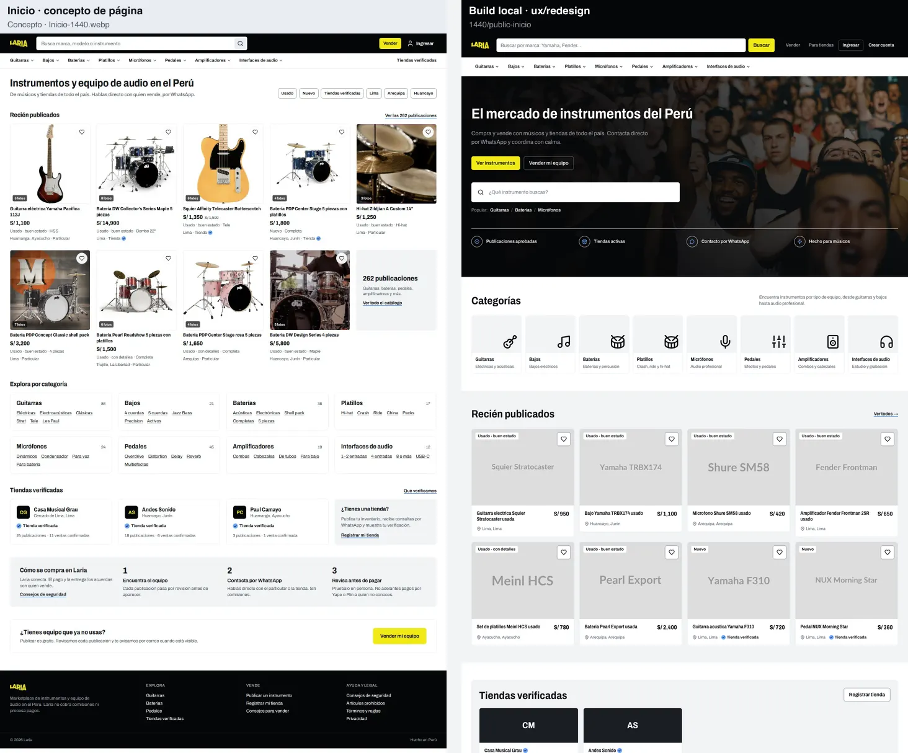
Inicio · versión final, 1440 UX-3
- Not built yet: the Diablada art banner with centred headline and "Explorar" search, the "En vitrina" row (newest listing per category, ink price tags, H2/H3), compact category tiles with counts, "Cómo funciona Laria" with the four promises (H4), the "¿Tienes una tienda?" tile and the sell block.
- Already aligned: the headline "El mercado de instrumentos del Perú" (H6) and the sell-block wording.
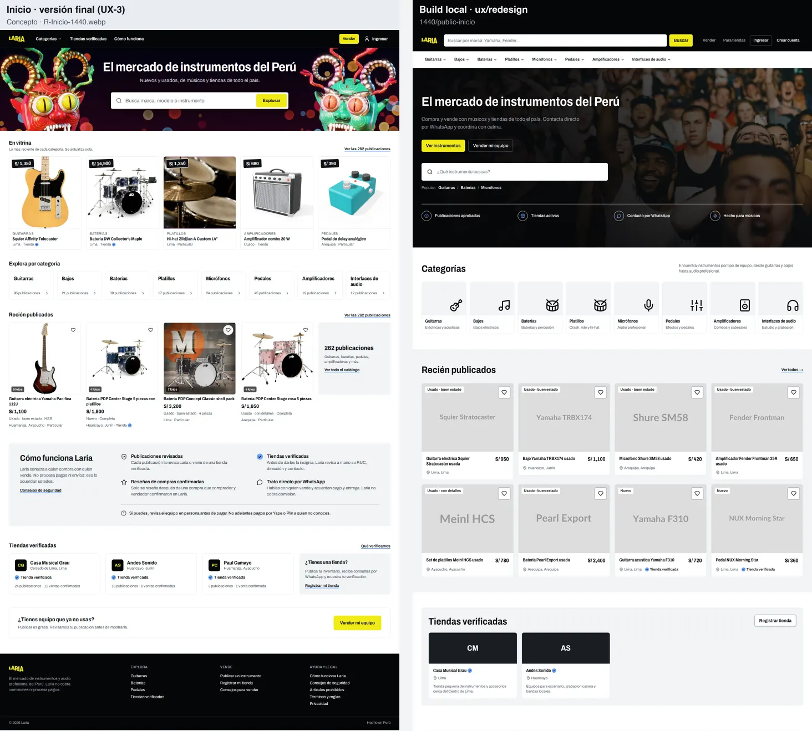
Inicio · concepto de página, 390 UX-2 · UX-3
- The concept's mobile header is one row (logo, search, account); the build stacks the search with "Buscar" and two rows of links, then an "Explorar categorías" disclosure.
- Same section order differences as at 1440; the build's listing cards are one column at 390 (two from 460 px), the concept's two.
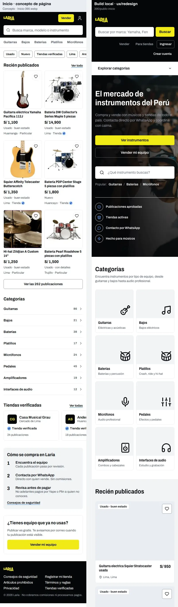
Inicio · versión final, 390 UX-3
- Phone banner (780×300 art), vitrina as a horizontal row, compact categories: none built yet.
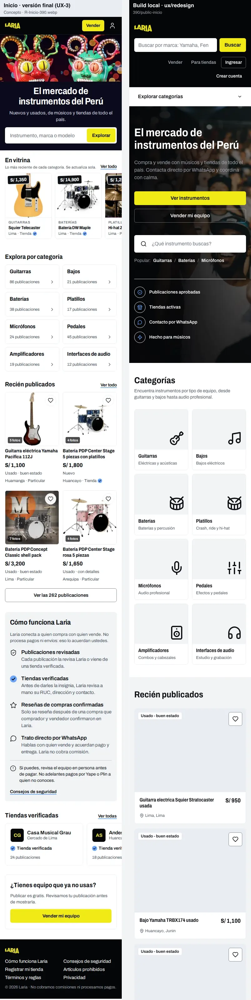
Banner en rotación UX-3
- The nine rotation pieces (art/rotation/, one per visit, H11) are not wired in; the build still shows the stock concert photo behind the hero.
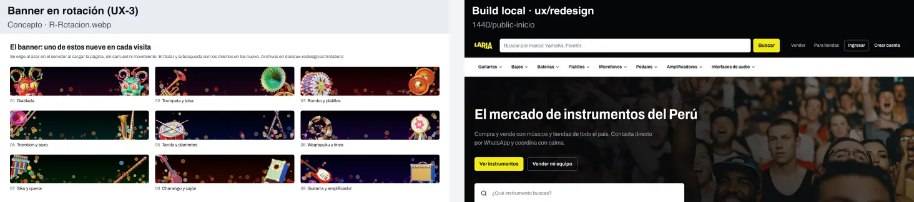
Catálogo, 1440 UX-3
- Concept: breadcrumb, category title with the count inline, "Crear alerta" and the sort control at the top right, applied chips in one row. Build: an intro panel (eyebrow, title, paragraph, count) and "Crear alerta" as a full-width panel above the grid.
- Filters: the concept uses checkbox facets with counts and category-specific facets (piezas, material, bombo); the build uses native selects and a yellow "Aplicar filtros".
- Concept places an inline "¿No está lo que buscas?" alert tile in the grid; the build's cards carry the seller tag beside the title and the category on the photo.
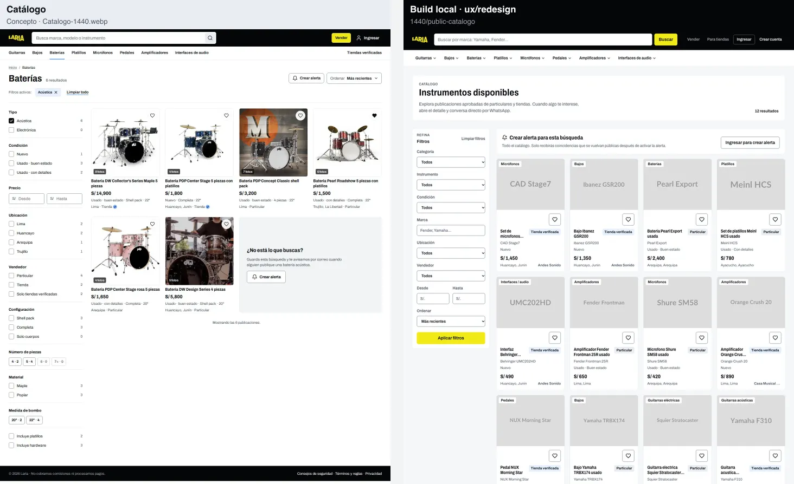
Catálogo, 390 UX-2 · UX-3
- Concept: category tabs under the header, title with "6 resultados · Recientes", Filtrar with an applied-count badge, the applied chip and a "Crear alerta" chip on one row, two-column grid.
- Build: large intro panel, Filtrar/Ordenar, alert panel, one-column cards.
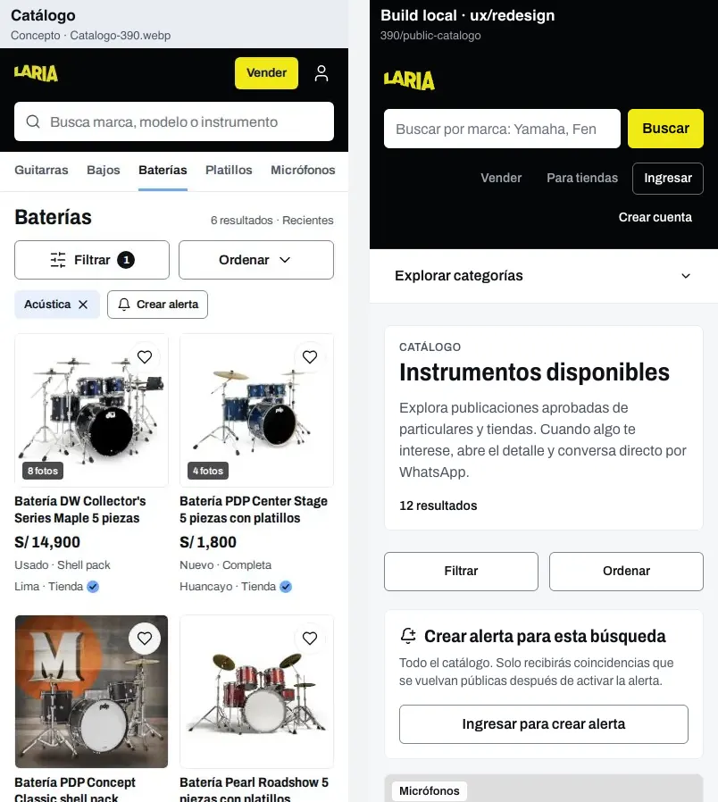
Filtros (hoja abierta), 390 UX-3
- Concept sheet: type as selectable chips with counts, condition checkboxes with counts, price fields with an S/ prefix, collapsible rows and a sticky footer ("Limpiar" + yellow "Ver 6 resultados").
- Build sheet: native selects, "Limpiar filtros" at the top, "S/." placeholders and "Aplicar filtros" at the end of the scroll. These raw controls are the documented UX-1 exception.
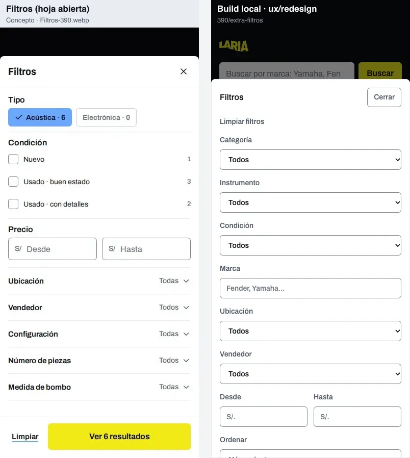
Ficha de publicación, 1440 UX-4
- Concept: thumbnail strip, brand eyebrow, condition tag with place and age, a four-cell spec strip, "Guardar" and "Compartir", one payment line, a seller card with rating, confirmed sales and a link to all their listings; then specs, description, a review histogram and related listings.
- Build: favourite button above the gallery, key specs as a two-column list, a separate "Sobre el vendedor" card with a second WhatsApp button, reviews before the description, a long specs table.
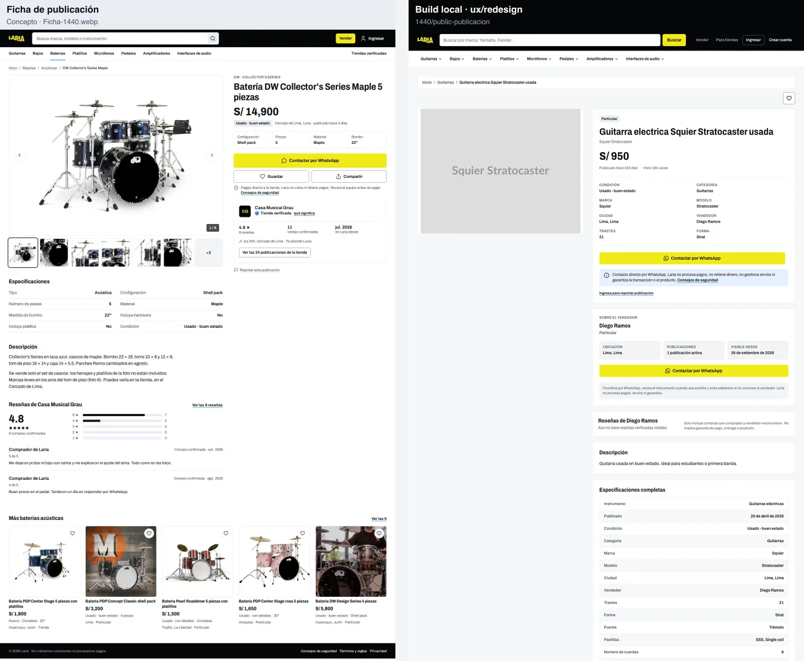
Ficha · primera pantalla, 390 UX-2 · UX-4
- Concept: back link to the category, sticky bottom bar (favourite + "Contactar por WhatsApp" + "Pagas directo al vendedor"), so the contact action is always in reach.
- Build: full header and categories disclosure push the photo below the fold; breadcrumb card; no sticky contact bar.
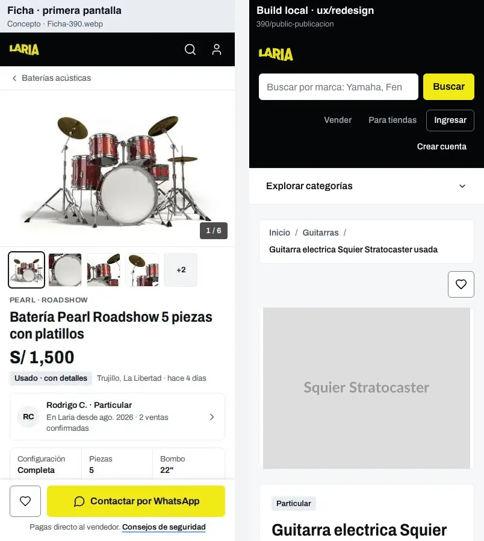
Ficha · resto, 390 UX-4
- The build shows two yellow "Contactar por WhatsApp" buttons in one screen (listing card and seller card), against the one-yellow-action rule; the concept has one, in the sticky bar.
- Concept folds the seller's reviews into the seller card and ends with a related-listings carousel.
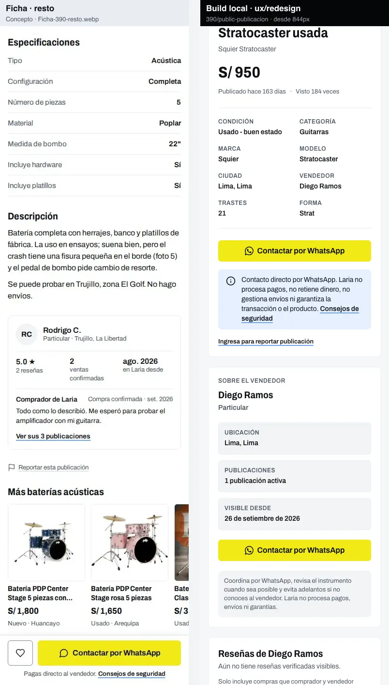
Tienda, 1440 UX-4
- Concept: compact identity header (logo tile, verified mark with "Qué verificamos", stats row), tabs (Publicaciones, Reseñas, Sobre la tienda), in-store search with category chips and sort, five-column grid, pagination, reviews and store details side by side.
- Build: a black cover with the store name (no banner uploaded), identity row with the monogram, reviews panel, three-column grid, no in-store search or chips.
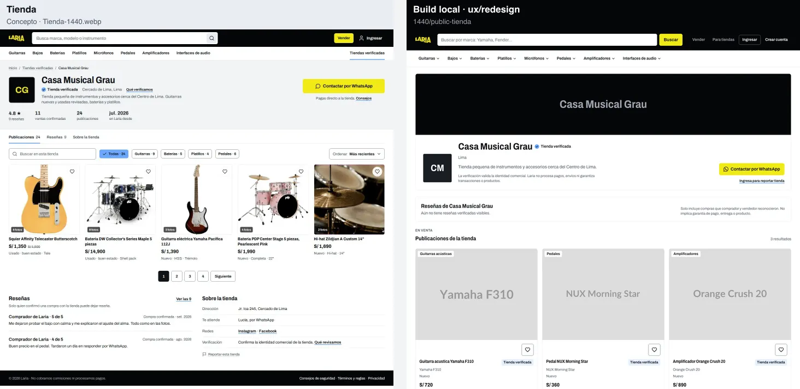
Cuenta · Mis publicaciones, 1440 UX-2 · UX-6
- Concept: light sidebar with the person's name and city, header with a count summary and "+ Publicar", status tabs with counts, table rows with thumbnail, status tags (including "Cambios en revisión"), a rejection reason row and row actions. The site header shows a notifications bell and an avatar.
- Build: black "Mi cuenta" card in the sidebar, page header in a panel; the test account has no listings, so the empty state shows.
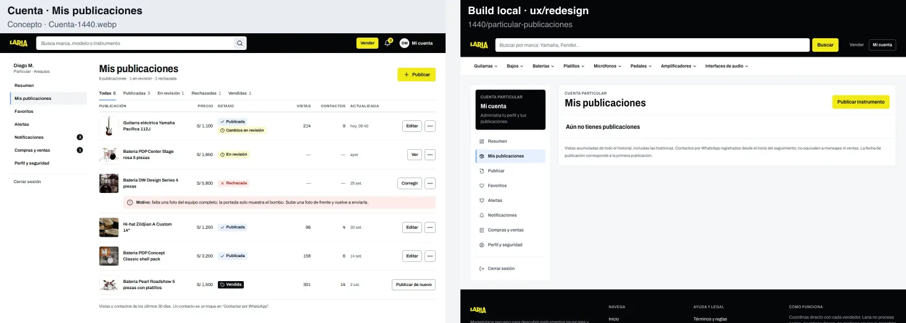
Cuenta · Mis publicaciones, 390 UX-2 · UX-6
- Concept: compact header with "Vender", bell and avatar, an account breadcrumb disclosure, list rows with status tags and actions.
- Build: full header, "Cuenta · Mis publicaciones / Menú" disclosure, page header panel, empty state.
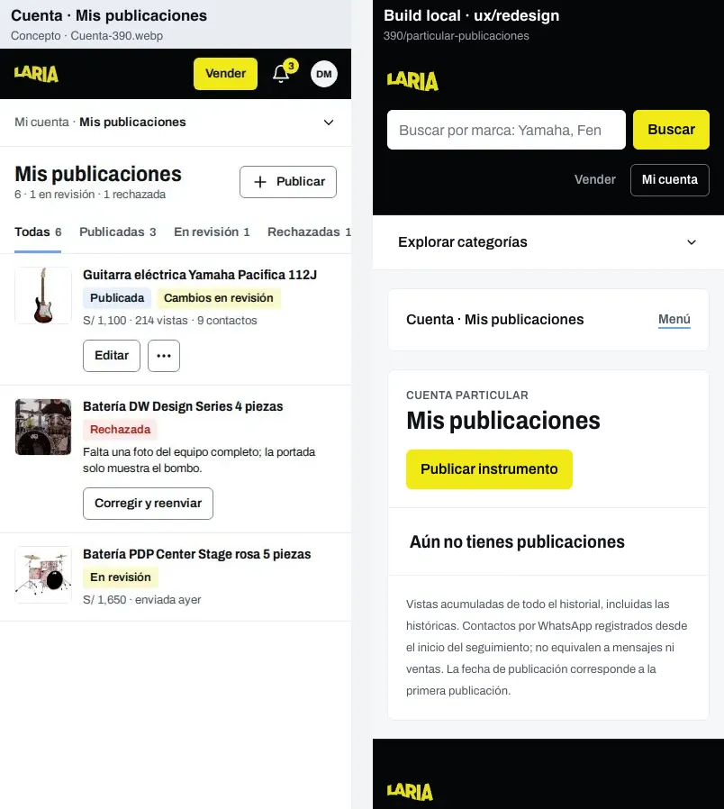
Publicar, 390 UX-5
- Concept order: error summary, Fotos first, "Qué vendes" (category, type chips, brand and model side by side, title with a hint), condition as radio cards with definitions, price with S/ prefix and place side by side, optional characteristics as chips, description with counter, terms, Publicar, and the review note.
- Build order: profile notice, title, category, type, brand, model, condition (select), price, city, region, description, photos (button), terms panel, Publicar. The concept's radio cards and chips are exactly the two primitives that have no consumer yet (Radio, Chip).
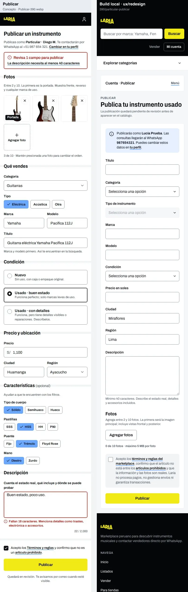
Admin · moderación, 1440 UX-7
- Concept: Admin has its own full-height black sidebar (no public header) and a master-detail queue: list on the left, the selected item on the right with a photo strip, field grid, description, a "Guía de revisión" checklist and a sticky decision bar ("Aprobar y publicar", "Rechazar con motivo", "Siguiente").
- Build: public header, Admin sidebar card, page header panel with counts, queue tabs, one full card per item with its actions below.
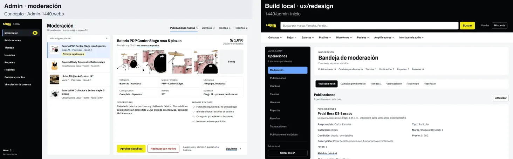